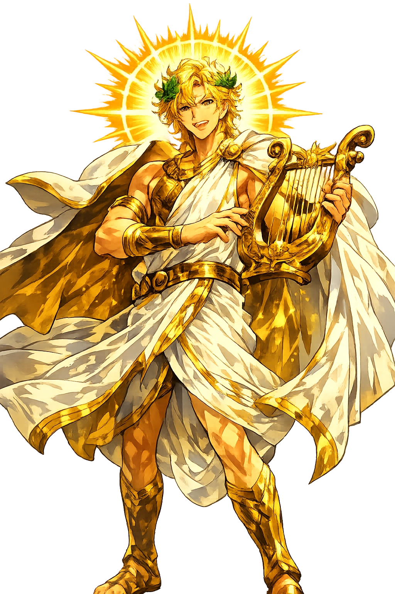

The Living Myth
Light, Music, Prophecy · The Shining One · Lord of the Lyre

Stories of Apóllōn
Apóllōn's myths are unusually coherent because they consistently dramatize the same theme: the distance between divine perfection and mortal limitation. He is never ridiculous, but he is often terrifying — and almost always far away.
Hera, in jealousy, had sworn that Leto would bear her children nowhere the sun shone on firm earth, and every land feared the goddess's wrath and refused the laboring Titaness. Only Delos — a floating, rootless island in the Aegean, 'the most wretched of islands' — dared accept her, on Leto's oath that Apollo's temple there would make it rich and honored beyond all islands (Homeric Hymn to Apollo 1–178; Callimachus, Hymn to Delos 18–276 embellishes). Clinging to a palm tree, Leto first bore Artemis and then, after nine days of labor, Apollo; the child sprang to maturity at once, swans circled the island seven times, and Delos, 'unwandering' ever after, became fixed to the sea floor — 'the weight of divinity anchors what chaos cannot hold.' His first act was to declare his domains: the bow, the lyre, and the unerring prophecy of Zeus's will.
Still an infant no more than four days old, Apollo went in search of an oracular seat and found it at Delphi, where a monstrous she-dragon, Pytho — 'wondrous to behold, a bane to the crops of men' — guarded a chasm from which prophetic vapors rose. Apollo struck the beast down with a single arrow from his silver bow and took the site for his own, founding his temple above the spring of Castalia (Homeric Hymn to Apollo 214–387; the combat, with its seismic imagery of burning rock and flood, has been read as the myth of a god arriving over an older, chthonic power — possibly the site of an earlier Gaia cult). From the carcass the victor's prize took its name: Pythian. The Pythia, seated on the tripod above the chasm, spoke his answers for a thousand years. The myth encodes Delphi's claim exactly: the most sacred speech in Greece is born from killing the monster that guarded unregulated access to the gods.
Athena had cast away the aulos, the double pipe, because playing it distorted her face, and the satyr Marsyas of Celaenae found it. Made bold by the instrument's sweetness, he challenged Apollo himself to a contest before a jury of the Muses — terms to be set by the winner, and the story does not hide what those terms were (Pseudo-Apollodorus, Bibliotheca 1.4.2; Herodotus 7.26 passes the river of blood; Ovid, Metamorphoses 6.382–400 and the fifth-century tragedians give the grisly detail). Marsyas played admirably; Apollo played the lyre upside down and demanded his rival do the same, which no pipes can do. The god won, and he exacted the wager: Marsyas was flayed alive on the tree at the source of the river that still bears his name, and his blood or tears became the stream. The myth is brutal because its logic is absolute: mortal skill may imitate divine order, but it cannot trade places with it.
Apollo loved the nymph Daphne, daughter of the river Peneus, and pursued her; she prayed to her father and the earth, and as the god's hand closed on her body she was transformed into a laurel tree, her feet rooting, her arms branching, her face vanishing into bark (Ovid, Metamorphoses 1.452–567 is the fullest telling; the story has Greek antecedents in Parthenius and the Hellenistic tradition). Apollo made the laurel his sacred tree and wove its leaves into the crown of victors at Delphi and of poets thereafter — the Pythian Games awarded laurel long after olive oil elsewhere. Even his unrequited love became an institution. The myth turns loss into symbol with an economy the Romans admired and the Renaissance repeated endlessly: what cannot be possessed becomes the sign of achievement, and the god's failure crowns every triumph in Western culture.
Niobe, queen of Thebes, wife of Amphion, boasted that she was blessed beyond the goddess Leto — twelve children, six sons and six daughters, against Leto's two. Leto complained to her twins, and Apollo and Artemis answered from Mount Cithaeron with their bows: the sons died in their fields, the daughters at home, and Niobe's last girl died in her mother's arms as Niobe raised the last prayer (Homer, Iliad 24.602–617 — the story as Achilles' old father Priam invokes it, our earliest telling; Ovid, Metamorphoses 6.146–312 expands). In the Iliad's version the dead are mourned nine days, buried on the tenth, and 'even then the snows of Niobe's grief did not melt' — she was turned to stone on Mount Sipylus, where a rock with a spring at its base was shown as her. Achilles tells the story to Priam to teach him that even Niobe ate after her children died. Comparative boasting against the gods is the one speech act the Greek gods never forgave.
Light, Music, Prophecy, and Healing
Apóllōn is the most Greek of the gods: not a chthonic power or a primal element, but the embodiment of measured excellence. He is the archer whose arrows strike from unseen distance, the musician whose lyre imposes order on chaos, the prophet who speaks only what Zeus permits, and the healer whose touch can lift plague as surely as his arrows bring it.
The eye that sees all and the fire that nourishes; Helios is the original solar charioteer, and it is Apóllōn who is increasingly solarized from the 5th century BCE onward.
His lyre, won from Hermês, orders emotion itself; music, mathematics, and cosmic proportion fall under his patronage.
At Delphoí, through the Pythia, he speaks in enigmatic verse; prophecy is not fortune-telling but the disciplined interpretation of divine will.
The same bow that sends plague can avert it; his epithets Alexikakos and Paiôn mark him as protector from evil and god of healing.
From the original script to the living URL
Ἀπόλλων
The name in its original Greek form. Apóllōn (Ἀπόλλων) is attested in the source tradition — “Possibly 'destroyer' or 'purifier' (from ἀπόλλυμι)”. Its long vowels and acute accents carry the full phonetic and orthographic weight of the source tradition.
apollon
Reduced to plain apollon, the name loses everything that made it specific: long vowels and acute accents. What remains is an ASCII string that machines can parse but that no longer speaks with its original voice.
Apóllōn
The Unicode restoration recovers what ASCII flattened. Apóllōn restores long vowels and acute accents, returning the name to its original written dignity. The domain encodes to Punycode, but the browser displays the truth.
Apóllōn.com → xn--aplln-1ta64d.com
The non-ASCII characters in Apóllōn are encoded while the ASCII remains visible. To the DNS, it is Punycode. To humanity, it is Apóllōn.
Owned, ideal, and ASCII forms of Apóllōn
Apóllōn
Restores Ἀπόλλων. The live temple domain — apóllōn.com.
Apollōn
Restores Ἀπόλλων. A second live spelling — apollōn.com.
Apṓllōn
Restores Ἀπόλλων. Stacked acute+macron on omicron: philologically ideal, untypeable on phones. Not in the PuniCodex collection.
apollon
Flattens Ἀπόλλων. The plain ASCII fallback — what DNS and legacy systems see.
How Apóllōn was spoken
How Apóllōn travels from ancient script to the modern URL
Greek Ἀπόλλων; etymology debated; folk-etymologies connect it with ἀπόλλυμι “to destroy" or ἀπολούω “to wash"; probably pre-Greek.
Light, Music, Prophecy
The Unicode restoration Apóllōn preserves Greek stress and length; the ASCII form apollon loses these features.
Apóllōn is the god who makes distance felt. His arrows come from far away; his oracle speaks in riddles; his music imposes pattern on emotion from above. He is not the warm sun but the clear, hard light that reveals every flaw. That is why he is both healer and destroyer: the same clarity that diagnoses disease also pronounces sentence.
Enter Extended Lore